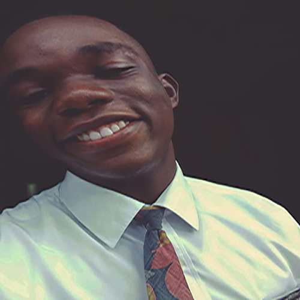

About Me
Victor C. Nmeka
a.k.a
ChisomtheVictor
Hello Everyone, I am Victor from Lagos, Nigeria. I love learning about and trying
out new technologies, visiting art museums and listening to good music.
I have been a member of the church of Jesus Christ of Latter-day Saints for
over 21 years(basically all my life from birth ). My favorite quote from a
church leader is "The past is behind--learn from it, the
future is ahead--prepare for it, the present is here--live in it."
by President Thomas S. Monson.